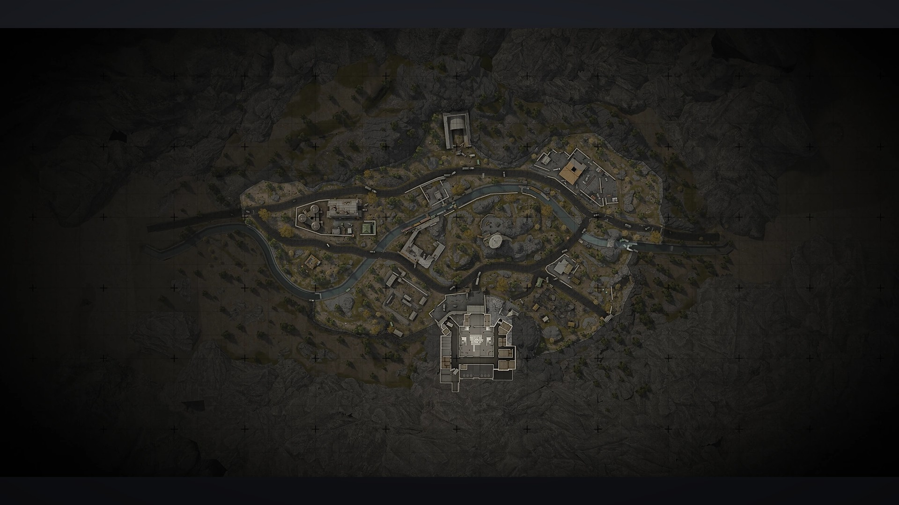

1. Vue d'ensemble
Armory est un dédale souterrain : racks d'armes, caisses de munitions, couloirs étroits. Chaque engagement se gagne à 3–15 mètres. La carte récompense les shotguns, SMGs et reflex — tout le contraire de Northridge.
2. Hotspots
- Salle des racks — les armes y spawnent en pagaille : c'est là que se joue la map.
- Casier munition — 7.62/5.45 en masse, idéal resupply.
- Bureaux du contrôleur — documents boxes, blueprints.
- Chambre forte — coffre central (rare, souvent gardé).
3. Tactique CQB — le protocole Armory
- Shotgun/SMG uniquement : une semi-auto trop lente = mort garantie. P90, USAS-12, MPX Vulcan S7.
- Pre-fire systématique : chaque angle suspect mérite 3 politesses de plomb.
- Grenades : stun avant chaque chambre — en CQB, 0,5 seconde d'avance gagne le duel.
- Renoir : engagez-le à distance MAX avec 2+ squads. En solo, contournez ou reportez.
4. Renoir en détail — l'équipement officiel du boss
Les données de cette section sont reprises du wiki officiel d'Arena Breakout Infinite (page Bosses et fiche Renoir). Ce sont les caractéristiques documentées du boss, pas des calculs de la communauté : elles décrivent ce que Renoir porte réellement en raid.
| Élément | Donnée officielle |
|---|---|
| Carte | Armory |
| Chance de spawn | ≈ 15 % |
| Garde du corps | 6 gardes |
| Jeton de boss | Battleforged Badge (intitulé « Identity » dans l'inventaire) |
| Armure minimale | T4, casque et masque Maztcha ; il apparaît le plus souvent en T5 |
| Signe distinctif | Casque Maztcha vert ; une fois le casque retiré, il est nettement chauve |
Armes de Renoir
| Arme | Munition |
|---|---|
| RPK-16 | 5.45×39mm BP (T4) |
| MK14 (fusil de marqueur) | 7.62×51mm M80 (T4) |
| AKS-74U | 5.45×39mm BP (T4) |
| AKM | 5.45×39mm BP (T4) |
| S12K | 12x70mm Armor-Piercing Slug (T3) |
Équipement de ses gardes
Renoir est accompagné de gardes armés. Voici leur équipement documenté :
| Catégorie | Équipement des gardes |
|---|---|
| Arme | MP-133 Shotgun |
| Munition | 12x70mm Type 7 / Type 8 Buckshot |
| Armure | SEK Composite Body Armor — niveau 4 |
| Ceinturon | FA Portable Chest Rig |
| Sac | Medium Camping Backpack |
Le piège des gardes
Les gardes de Renoir sont en armure niveau 4 et vides le MP-133 à la buckshot : à l'étage, dans un couloir, une garde qui vous voit est une menace réelle. Renoir porte, lui, du T4 minimum et souvent du T5 — mais il est identifiable et repérable. Deux règles en découlent : ne tirez pas dans le vide sur un mouvement de couloir, et contre Renoir lui-même, le corps à corps est inutile — visez la tête, il ne porte pas de casque détectable de loin une fois le Maztcha retiré.
Les autres boss de la carte, pour mémoire
Le wiki officiel attribue les autres boss comme suit — utile pour ne pas confondre les cartes :
- Ajax Jones — boss de Farm, ~15 % de spawn, 5 gardes, jeton Pocket Knife. C'est lui qui tient les Étables et le Motel de Farm.
- Doss Anthony — boss de Valley, ~15 % de spawn, 10 gardes (le plus nombreux du jeu), jeton Handmade Gold.
- Fred (Frade) Lee — boss de Northridge, jeton Frade's Wedding Ring.
- Kurt Williams et Bernard Martin — les deux boss de TV Station.
Source : wiki officiel ABI, page « Bosses ». Rien de tout cela n'est une rumeur : ce sont les fiches officielles du jeu. En revanche, les stratégies de combat pour les abbattre relèvent de l'expérience de terrain, pas des données publiées.
5. Extractions — peu mais stratégiques
- 3 extractions seulement : elles sont pré-visées par tous les survivants. Le wiki officiel liste exactement trois points de sortie sur Armory, et les trois sont conditionnels.
- Arrivez T-5 min, écoutez 15 s, passez en courant accroupi.
- Jamais deux fois le même extracteur sur deux raids consécutifs.
| Point de sortie | Type officiel | Condition d'activation |
|---|---|---|
| F Control Room | Chance / Conditional | Active 15 min après le début du raid |
| B1 Canal | Chance / Conditional | L'écluse s'ouvre 3 min après le début du match — il faut trouver l'interrupteur dans la zone de contrôle du 2e étage |
| B1 Passage | Chance / Conditional | Active 15 min après le début du raid |
Source : wiki officiel ABI, tableau « Extraction Points » de la page Armory. Aucune de ces trois sorties n'est garantie : votre plan doit toujours inclure un repli.
Le piège Armory
Le bruit des racks qui tombent s'entend à 40 mètres dans le couloir. Loot en silence, loot vite.
Zones officielles
Libellés relevés sur la carte officielle du jeu : ces noms sont ceux affichés en jeu et repris par les codes-cle.
- Core Unit
- Control Room
- Lounge
- Ammo Dump
- Conference Room
- Canal
- Command Room
Points d'extraction officiels
Liste exhaustive des sorties de la carte (noms de jeu). Les extractions vertes sont fixes ; les autres dépendent d'un vehicule, d'un abonnement ou d'une zone Nanotech.
- F Control Room
- B1 Canal
- B1 Passage
Clés de la carte
Chaque clé s'use à l'usage : 1 point en Normal, 2 en Lockdown, 3 en Forbidden. Une clé à 45 de durabilité tient donc beaucoup moins longtemps en Forbidden.
| Clé | Durabilité | Débloque |
|---|---|---|
| Weapon Storage Keycard | 30 | non documenté |
| Commnand Room Entry Keycard | 30 | non documenté |
| Private Lounge Key | 45 | non documenté |
| Second Floor Lounge Key | 45 | non documenté |
| Commnand Room Exit Keycard | 30 | non documenté |
| Sluice No. 2 Key | 3 | non documenté |
Les clés marquées non documenté sont bien présentes sur la carte et leur durabilité est vérifiée, mais le wiki officiel ne documente pas encore les conteneurs qu'elles ouvrent. Considérez-les comme des accès à une zone précise plutôt que comme des clés de loot garanti.
Boss de la carte
Ajax — spawn parmi les points d'intérêt : approchez avec une armure T3 minimum et surveillez le tour de garde.
Cartes interactives
Cartes de référence
Deux ressources de référence pour aller plus loin que cette page :
- ABIBuilder — catalogue des cartes (nouvel onglet) : spawns, clés et stats de loot par carte.
- TCNO — carte interactive de Armory (nouvel onglet) : survol des zones, marqueurs d'extraction et de loot.